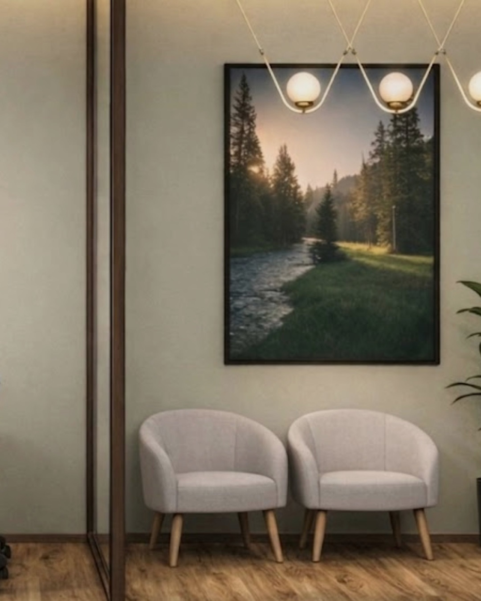
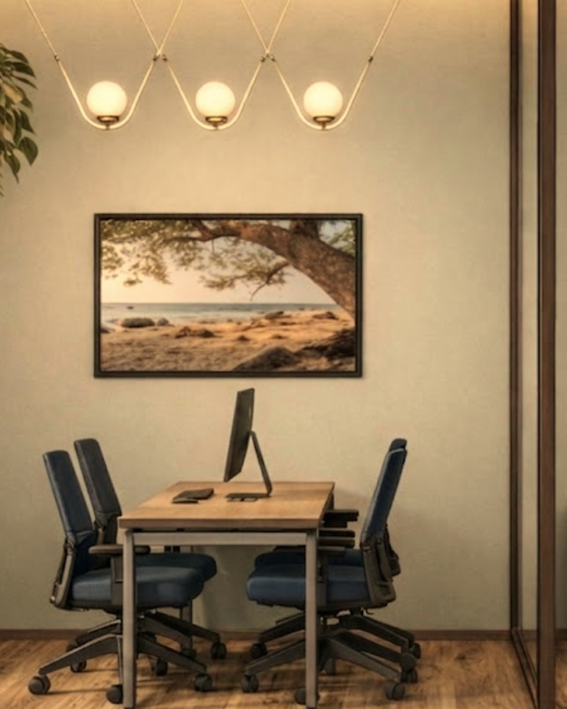

@fairhealth.br01/06
Desde 2009
O colaborador
no centro.
O Escritório do Cuidado é um espaço de atendimento médico e psicológico dentro da sua empresa. Ele tira do caminho a maior barreira ao cuidado: o tempo e o acesso. A proximidade aumenta a adesão. A adesão gera resultado.

@fairhealth.br02/06
2009 · Onde tudo começou
Antes de tratar,
escutar.
Em 2009, num hospital, desenvolvemos o Escritório do Paciente. A primeira pergunta deixou de ser “o que você tem?” e passou a ser “o que importa para você?”. Quem é ouvido confia. Quem confia se cuida.

@fairhealth.br03/06
O que aprendemos
Ser ouvido também
é cuidado.
As reclamações caíram de 34 para cerca de 20 por mês. A escuta mudou a experiência. A experiência mudou o cuidado.
Resultado apresentado em congresso internacional.
Conhece quem cuida das pessoas na sua empresa? Mande este post.

@fairhealth.br04/06
Com o tempo
Quem cuida
também se cansa.
Médicos, enfermeiros e, nas empresas, o RH e as lideranças passam o ano cuidando de todo mundo e quase nunca são cuidados. Cuidado bom começa por quem cuida.

@fairhealth.br05/06
E mais uma coisa
O cuidado precisa
chegar.
Para quem está na linha de produção, uma consulta pode custar horas de deslocamento e de fila. A distância adia o cuidado. E o cuidado adiado cobra o seu preço depois.

@fairhealth.br06/06
Hoje
E foi assim
que nasceu o
Escritório do
Cuidado.
Tudo o que aprendemos, a poucos passos de quem trabalha. Para que ninguém precise escolher entre o trabalho e a própria saúde.
Comente CUIDADO
e enviamos na DM como funciona o diagnóstico gratuito.
Na segunda: resultados reais, contados por quem criou o método.
 @fairhealth.br
@fairhealth.br